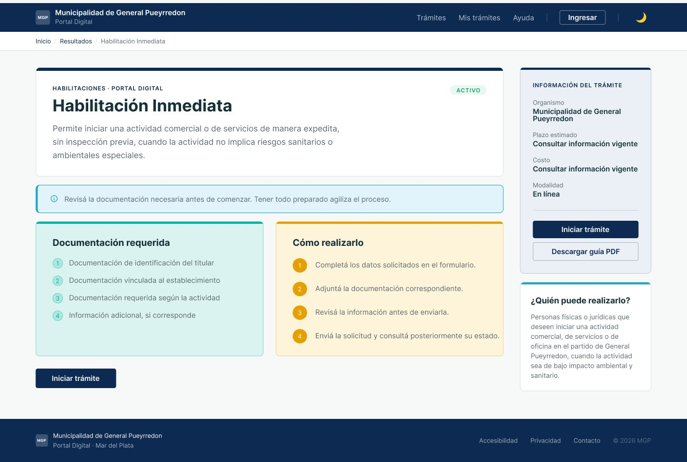
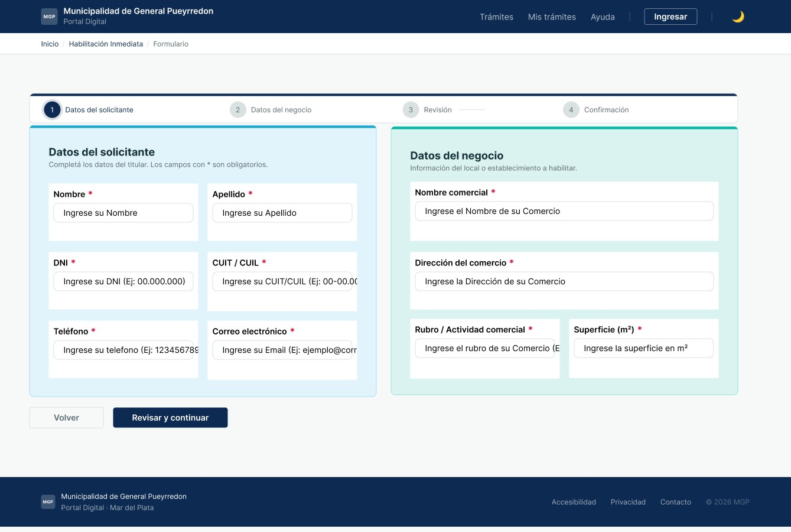
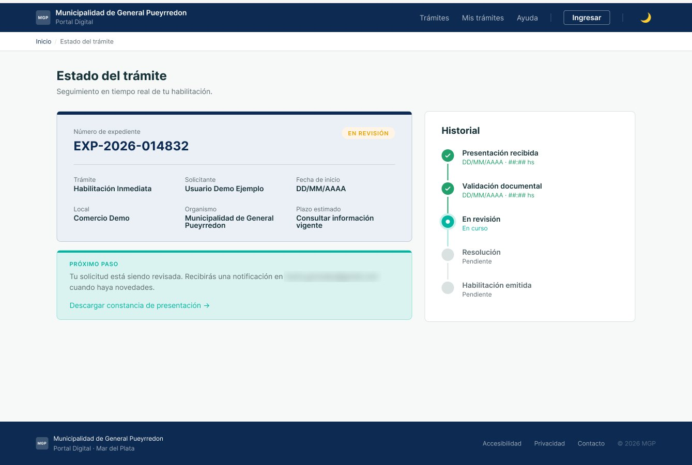

Pilar 1 · Flujos complejos en dominios regulados
Portal de Trámites · Habilitación Inmediata
Que alguien que quiere abrir su negocio sepa qué necesita, lo cargue sin volver atrás y pueda seguir su trámite sin llamar al municipio.
Rediseño conceptual hecho como trabajo de formación. No es el sitio oficial de la Municipalidad de General Pueyrredon ni fue encargado por ella.
Problema
Información pensada desde el municipio, no desde quien hace el trámite
Los requisitos y la documentación de la Habilitación Inmediata estaban fragmentados, y no había un canal digital para saber en qué estado estaba la solicitud.
Proceso y resultados
Validar la arquitectura antes de dibujar
- Card sorting abierto y tree testing en UXtweak, con 6 participantes válidos de 8. Éxito global: 91,7 %; navegación directa: 66,7 %; tiempo mediano: 1 min 43 s.
- Hallazgo: «Requisitos» y «Documentación necesaria» se confunden, y hay varias entradas plausibles para seguir un trámite. La versión 2 de la arquitectura propone unificar las dos etiquetas y dejar «Mis trámites» como entrada al seguimiento. Todavía no está aplicada en el prototipo.
- Test del prototipo en Maze con 5 participantes: completar el formulario tuvo 80 % de éxito con muchos misclicks, y confirmar la solicitud, 50 %, porque el consentimiento no mostraba que habilitaba el botón. Quedaron cinco cambios propuestos y el retest pendiente.
Solución
Qué necesito, cómo lo cargo y en qué estado está



Aprendizaje
Simplificar es ordenar, no sacar
Al principio quería mostrar todos los requisitos «por si acaso». Rehice el orden varias veces hasta encontrar qué mostrar primero y qué podía esperar, pensando en gente que hace todo online y en gente que casi no usa la computadora.